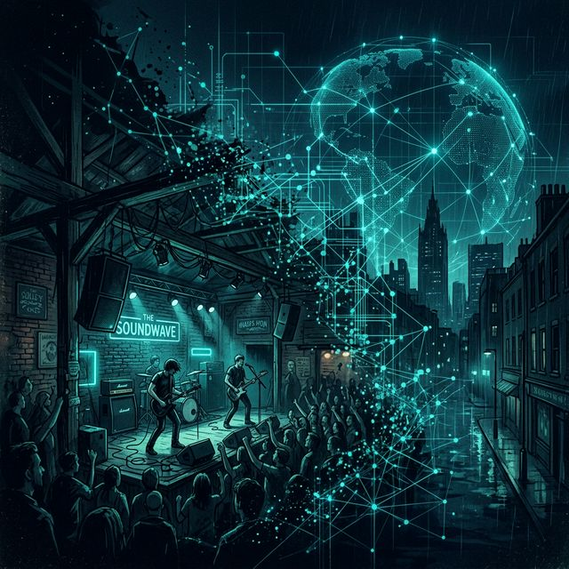

// sociología · geografía urbana · plataformas
Escenas musicales locales hoy en día:
¿una herramienta válida?*

* Este artículo constituye una versión revisada, ampliada y actualizada de un trabajo anterior publicado en 2017. Aunque conserva la pregunta de fondo y parte de la orientación inicial, la presente versión reformula el argumento, depura la expresión y revisa críticamente el marco teórico y bibliográfico a la luz de transformaciones recientes en las prácticas musicales y en sus condiciones de circulación.
Palabras clave: escena musical, música popular, localismo, translocalidad, virtualidad, identidad, ciudad, plataformas digitales.
1. Introducción
La expresión escena musical pertenece a la vez al vocabulario ordinario de la crítica cultural y al repertorio conceptual de los estudios académicos sobre música popular. Se emplea para aludir, de manera más o menos intuitiva, a agrupamientos de músicos, públicos, espacios, repertorios y prácticas sociales vinculados a un determinado estilo, entorno urbano o red de relaciones. No obstante, esa aparente familiaridad encubre una notable indeterminación conceptual. La escena musical designa algo reconocible, pero no siempre fácilmente delimitable.
En el ámbito académico, el concepto adquirió relevancia a partir de la década de 1990 como respuesta a las limitaciones de otras categorías utilizadas para estudiar la relación entre música y sociedad. Frente a nociones como subcultura o comunidad, la escena permitía pensar configuraciones más abiertas, dinámicas y heterogéneas, capaces de dar cuenta de la movilidad de los actores, de la permeabilidad de las fronteras sociales y de la complejidad de las mediaciones culturales (Straw 1991; Bennett 2004). Desde este punto de vista, su éxito no se debió a una precisión cerrada, sino a su capacidad para nombrar procesos relacionales que otras herramientas conceptuales apenas conseguían capturar.
Sin embargo, la productividad de la categoría no la exime de revisión. Las transformaciones experimentadas por la industria musical desde finales del siglo XX, la expansión de internet, la creciente centralidad de las redes sociales, la plataformización del consumo cultural y la intensificación de las circulaciones transnacionales han modificado profundamente las condiciones de existencia de las prácticas musicales. En ese nuevo contexto, la escena musical local ya no puede ser concebida como una unidad autosuficiente ni como una realidad separable con nitidez de lo translocal y lo virtual.1
Este artículo parte de una doble hipótesis. En primer lugar, sostiene que la noción de escena musical local fue especialmente fecunda para el análisis de ciertas formaciones musicales urbanas de la segunda mitad del siglo XX, particularmente en contextos marcados por la emergencia del punk, del post-punk y de otras culturas musicales articuladas en torno a la ciudad, los circuitos de proximidad y la ética del do it yourself (Shank 1994; Cohen 1991). En segundo lugar, defiende que, en el presente, el concepto requiere una reformulación crítica. No se trata de abandonarlo, sino de desplazarlo desde una comprensión territorial cerrada hacia una concepción más compleja, atenta a la interacción entre espacialidad, mediación digital, memoria e infraestructura.
2. De la subcultura y la comunidad a la escena
La consolidación del concepto de escena solo se entiende en relación con las insuficiencias de los modelos previos. La noción de subcultura, desarrollada de forma influyente por la Escuela de Birmingham, permitió estudiar las culturas juveniles británicas de posguerra atendiendo a sus estilos, consumos y formas de resistencia simbólica. Sin embargo, con el tiempo se hizo evidente que dicha categoría tendía a acentuar en exceso la coherencia interna de los grupos y a simplificar la heterogeneidad de sus composiciones sociales (Bennett 1999; Thornton 1995). La diversidad de clase, género, etnia y trayectoria biográfica quedaba con frecuencia subordinada a una imagen demasiado compacta de la pertenencia.
Algo similar ocurrió con la idea de comunidad. Aunque sigue siendo útil en determinados contextos, su uso en los estudios de música popular ha estado a menudo asociado a una concepción excesivamente cohesionada, orgánica e incluso idealizada del vínculo social. En muchos casos, la música no expresa una comunidad previamente constituida, sino que contribuye a producirla de forma contingente, conflictiva y provisional. Como observó Simon Frith, la música no solo refleja identidades colectivas, sino que también las fabrica como experiencia social (Frith 1981).2
En este marco, la escena se reveló como una categoría más flexible. Su principal virtud consistía en no presuponer homogeneidad social ni cohesión normativa. Una escena no es un grupo cerrado ni una totalidad armónica, sino una red de relaciones entre músicos, públicos, mediadores, instituciones, espacios y dispositivos culturales. Su unidad no deriva de la pureza de sus fronteras, sino de la intensidad de sus articulaciones. Por ello, la escena permitió pensar con mayor precisión los modos en que determinadas prácticas musicales se vinculan a contextos urbanos concretos, sin por ello quedar reducidas a ellos (Straw 1991; Peterson y Bennett 2004).
3. Elementos constitutivos de la escena musical
Para que el concepto de escena conserve capacidad analítica, conviene evitar que se convierta en una categoría indiscriminada. No toda agregación de prácticas musicales constituye una escena. A mi juicio, al menos cuatro dimensiones resultan fundamentales.
- La Espacialidad. Toda escena implica una geografía, aunque esta no sea exclusivamente física. Salas de conciertos, bares, locales de ensayo, tiendas de discos, estudios de grabación, calles, barrios y circuitos urbanos funcionan como nodos en los que se condensan prácticas, expectativas, afectos y relaciones de reconocimiento. La escena no se limita al espacio, pero no puede pensarse sin él (Cohen 1991; Driver y Bennett 2015).
- La Identidad. Las escenas no se reducen a repertorios sonoros: son también ámbitos de exploración, negociación y puesta en forma de identidades individuales y colectivas. En ellas se elaboran modos de vestir, lenguajes, códigos, afinidades y oposiciones. La música opera, en ese sentido, como práctica de identificación y diferenciación (Shank 1994; Bennett 1999).
- La Mediación. Ninguna escena existe al margen de los dispositivos que la hacen visible, narrable y circulable. La prensa musical, la radio, los carteles, los fanzines, los videoclips, las redes sociales o las plataformas digitales no son simples añadidos externos: forman parte de la propia constitución de la escena. Lo que una escena es depende también de cómo se representa, se documenta y se distribuye (Thornton 1995; Bennett y Rogers 2016).
- La Historicidad. Toda escena trabaja con materiales heredados: sonidos, símbolos, relatos, mitologías, memorias y objetos. Las escenas no emergen de la nada; reordenan legados y producen genealogías. En ese sentido, la memoria no es un suplemento retrospectivo, sino una dimensión constitutiva de la práctica musical misma (Bennett y Rogers 2016).
Estas cuatro dimensiones permiten entender la escena musical como una formación relacional históricamente situada, en la que espacio, identidad, mediación y memoria se articulan de manera variable. Su utilidad reside precisamente en hacer visible esa articulación, no en ofrecer una taxonomía cerrada.
4. La productividad histórica de la escena local
La noción de escena local fue especialmente útil para el estudio de determinados momentos históricos en los que el territorio urbano y la sociabilidad presencial actuaban como ejes estructuradores de la práctica musical. Casos como Liverpool, Manchester, Austin, Madrid o Vigo muestran con claridad hasta qué punto ciertos estilos se desarrollaron no solo en un lugar, sino a través de él: mediante redes de proximidad, economías precarias, imaginarios urbanos, tensiones culturales y espacios concretos de encuentro (Cohen 1991; Shank 1994).
La fuerza del concepto radicaba en captar cómo determinadas músicas eran apropiadas, transformadas y resignificadas localmente. La ciudad no aparecía simplemente como contenedor, sino como medio activo de producción cultural. Los locales emblemáticos, por ejemplo, no eran meros escenarios funcionales, sino espacios de condensación simbólica, lugares donde se estabilizaban repertorios, se generaban jerarquías y se producía memoria.3
En este sentido, la escena local resultó particularmente esclarecedora para comprender el impacto del punk y del post-punk. La ética DIY, la desprofesionalización relativa de la práctica musical, la activación de circuitos alternativos y la crítica a los lenguajes dominantes de la industria favorecieron la proliferación de escenas urbanas intensamente localizadas. Lo decisivo no era únicamente la novedad sonora, sino la reestructuración del espacio social de la música: nuevos actores, nuevos lugares, nuevas legitimidades y nuevas formas de identificación (Hebdige 1979; Shank 1994).
Por ello puede sostenerse que el concepto de escena local resulta especialmente productivo para estudiar formaciones musicales urbanas situadas entre finales de los años setenta y mediados de los noventa, es decir, en un periodo en el que el anclaje territorial y la sociabilidad presencial seguían siendo condiciones centrales de producción y circulación cultural.
5. Crisis relativa del localismo como categoría autosuficiente
El problema aparece cuando ese modelo se aplica sin mediaciones al presente. A partir de los años noventa, y con mayor intensidad en el siglo XXI, las condiciones de producción, distribución y recepción musical cambiaron de manera radical. La socialización musical dejó de depender exclusivamente de la copresencia física. Los vínculos entre músicos, públicos y mediadores comenzaron a articularse también a través de redes digitales, plataformas de vídeo, servicios de mensajería, circuitos de autoproducción y sistemas algorítmicos de recomendación (Kibby 2000; Bennett y Peterson 2004).
En consecuencia, lo local no desapareció, pero dejó de constituir una escala autosuficiente. Las prácticas musicales contemporáneas siguen produciéndose en ciudades, barrios, locales y estudios, pero esos espacios están ya atravesados por flujos translocales y virtuales que afectan de forma decisiva a su visibilidad, circulación y autocomprensión. Una escena puede tener un fuerte anclaje urbano y, al mismo tiempo, operar desde su origen como red distribuida.
Esta transformación obliga a revisar críticamente el concepto de escena local. Si se lo concibe de manera fuerte, como una unidad territorial relativamente autónoma, corre el riesgo de volverse anacrónico. Si, por el contrario, se lo reformula en términos relacionales y multiescalares, puede seguir siendo útil. El reto consiste, por tanto, en no confundir persistencia del lugar con suficiencia analítica de lo local.
Además, la plataformización de la cultura ha alterado de forma profunda la relación entre underground y mainstream. Durante buena parte del siglo XX, las escenas locales funcionaron como laboratorios de experimentación estética y social que la industria musical incorporaba posteriormente. Hoy, en cambio, la visibilidad, la legitimidad y la circulación dependen también de infraestructuras digitales que premian otros regímenes de atención y otras formas de optimización. La independencia ya no puede pensarse como simple exterioridad al mercado, sino como una posición inestable dentro de ecologías culturales gobernadas por plataformas.4
6. Vigo como problema analítico: de la escena localizada a la escena expandida
El caso de Vigo permite observar con especial claridad el desplazamiento histórico que aquí se propone. Pensar la Vigo musical de los años ochenta sigue siendo, en gran medida, pensar una escena local en el sentido fuerte del término: una red relativamente densa y reconocible de músicos, locales, mediadores, públicos y circuitos urbanos, articulada por la copresencia, la proximidad territorial y la intervención directa sobre el espacio de la ciudad. En ese contexto, la escena podía estudiarse todavía como un ecosistema local dotado de una cierta coherencia interna, aunque atravesado, por supuesto, por tensiones estéticas, comerciales e ideológicas.
La escena viguesa de aquel momento respondía de forma bastante precisa al modelo clásico de escena local: centralidad de los espacios físicos, importancia decisiva de los locales de ensayo, bares y salas, sociabilidad cara a cara, formación de públicos relativamente estables, y una mediación todavía muy dependiente de la prensa musical, la radio, el directo y los canales convencionales de la industria. Incluso cuando aquellas bandas dialogaban con referencias foráneas, el procesamiento simbólico de esas influencias se hacía desde una experiencia urbana intensamente localizada. La ciudad no era un simple telón de fondo, sino una condición material y afectiva de posibilidad.
Las escenas actuales vinculadas a Vigo presentan, en cambio, otro tipo de configuración. Continúan existiendo anclajes locales, pero estos ya no bastan para describir el fenómeno. Hoy el lugar de origen opera más bien como punto de partida, como marca de procedencia o como reserva simbólica, no como límite efectivo de la escena. Los proyectos se constituyen desde el comienzo en una ecología híbrida donde conviven ciudad, redes sociales, plataformas, circuitos estatales, festivales, colaboraciones translocales y comunidades digitales de recepción. Por eso, en el presente, Vigo resulta menos legible como "escena cerrada" y más como nodo dentro de una constelación de escalas superpuestas.
En este punto resultan particularmente útiles dos ejemplos recientes, no porque agoten la diversidad viguesa actual, sino porque permiten visualizar dos formas distintas de relación entre lo local y lo extralocal.
Por un lado, As Fillas de Cassandra, dúo formado por María SOA y Sara Faro, ambas nacidas en Vigo, representan una modalidad de proyección contemporánea en la que la dimensión identitaria no desaparece al ganar visibilidad, sino que se intensifica. Su propuesta articula tradición oral gallega, mitología, feminismo, teatralidad y sonoridades contemporáneas, y lo hace desde una reivindicación explícita de lo gallego como espacio lingüístico, cultural y político. Ellas mismas han vinculado su nombre a una lectura feminista del mito de Casandra y a la necesidad de formular una voz propia frente a formas persistentes de opresión patriarcal. Diversos perfiles y entrevistas subrayan además su procedencia viguesa y el carácter central de esa matriz cultural en su trayectoria.
Ahora bien, precisamente porque su caso es contemporáneo, su fuerte dimensión identitaria no puede confundirse con localismo en sentido estricto. As Fillas de Cassandra son viguesas, trabajan con materiales culturales gallegos y activan un imaginario claramente situado, pero su circulación efectiva excede desde muy pronto el marco local. Su presencia en festivales, medios estatales y colaboraciones con artistas de alta visibilidad dentro de la música gallega reciente muestra que la identidad local ya no funciona como límite geográfico de la escena, sino como recurso de singularización dentro de circuitos mucho más amplios. El paso de lo local a lo expandido no diluye aquí la marca de origen: la resemantiza.
Por otro lado, dani dicostas permite observar un tipo distinto de trayectoria. Vinculada a Vigo en sus comienzos y todavía identificada en diversas entrevistas y perfiles como artista procedente de la ciudad, su carrera muestra con claridad una inscripción más inmediata en circuitos pop estatales y en dinámicas de movilidad entre Vigo y Madrid. Mondo Sonoro señaló ya en 2023 que se había mudado de Vigo a Madrid y que ese desplazamiento atravesaba su nuevo trabajo; en una entrevista anterior, la propia artista hablaba de una "escena super chula en Vigo" ya fusionada con la de Madrid, mencionando además la conexión creciente entre ambas. Más recientemente, su presencia en ciclos como Momentos Alhambra confirma una circulación que rebasa completamente el marco local.
Lo interesante de este segundo caso es que el vínculo con Vigo no desaparece, pero deja de organizar el sentido principal del proyecto. Si en As Fillas de Cassandra lo local-identitario funciona como motor poético y político de la propuesta, en dani dicostas el origen vigués aparece más bien como punto de partida biográfico dentro de una lógica pop más cosmopolita, móvil e interurbana. No se trata de una oposición simple entre "lo auténtico" y "lo comercial", ni entre "lo local" y "lo global", sino de dos maneras distintas de habitar la contemporaneidad musical desde una ciudad periférica. En un caso, la singularidad se construye mediante la intensificación de una lengua, una memoria y unos símbolos situados; en el otro, mediante la inserción fluida en redes de circulación más amplias y estilísticamente menos territorializadas.
Esta diferencia permite subrayar una mutación decisiva respecto de los años ochenta. Entonces, la escena local tendía a funcionar como condición de posibilidad de las trayectorias: primero era necesario consolidar una red urbana, unos espacios, una comunidad de recepción y un circuito reconocible, y solo después podía producirse una proyección exterior más amplia. En el presente, en cambio, muchos proyectos nacen ya orientados hacia una circulación simultáneamente local, estatal y digital. La exterioridad no llega después; está incorporada desde el inicio. La escena no desaparece, pero pierde parte de su antigua clausura territorial.
De ahí que el contraste entre la Vigo de los ochenta y la Vigo actual no deba formularse como oposición entre una escena "verdadera" y otra "disuelta", sino como diferencia entre dos regímenes de articulación. La primera respondía todavía a una lógica de concentración espacial, mediación presencial y sedimentación urbana relativamente estable. La segunda se caracteriza por una articulación más móvil, fragmentaria y expandida, en la que lo local sigue importando, aunque ya no como única escala organizadora. Hoy Vigo sigue produciendo escenas, pero estas solo pueden comprenderse si se estudian a la vez como experiencias urbanas, redes translocales y configuraciones mediadas digitalmente.
En ese sentido, los casos de As Fillas de Cassandra y dani dicostas no son anomalías, sino síntomas de una transformación más profunda: la imposibilidad de seguir pensando lo local como una esfera analíticamente autosuficiente. La escena contemporánea no deja atrás la ciudad, pero tampoco cabe ya enteramente en ella.
7. Hacia una reformulación del concepto de escena
La conclusión que se desprende de lo anterior no exige abandonar el concepto de escena, sino someterlo a una revisión más exigente. A mi juicio, esta reformulación debería atender al menos a cuatro cuestiones.
- En primer lugar, habría que evitar una comprensión esencialista del territorio. La escena no es una emanación natural de la ciudad ni una propiedad intrínseca de un lugar, sino una articulación históricamente situada de actores, espacios, mediaciones e infraestructuras.
- En segundo lugar, es imprescindible incorporar las plataformas digitales como elemento constitutivo del análisis. Hoy no es posible estudiar las prácticas musicales contemporáneas sin atender a los regímenes de visibilidad, clasificación y circulación que imponen redes y servicios digitales.
- En tercer lugar, conviene adoptar una perspectiva multiescalar. Lo local, lo translocal y lo virtual no deberían entenderse como compartimentos separados, sino como dimensiones entrelazadas de una misma formación cultural.
- Por último, es necesario recuperar la dimensión afectiva, corporal y memorial de las escenas. Estas no son simples redes abstractas ni agregados de contenidos circulantes: están hechas de presencias, emociones, cansancios, rutinas, precariedades, archivos y relatos retrospectivos. La escena es también una forma de experiencia (Driver y Bennett 2015; Bennett y Rogers 2016).
8. Conclusión
La escena musical local fue una herramienta especialmente valiosa para estudiar determinadas prácticas musicales urbanas de la segunda mitad del siglo XX. Su capacidad para articular espacio, identidad, mediación y memoria la convirtió en una categoría central dentro de los estudios de música popular. Sin embargo, las transformaciones tecnológicas, económicas y comunicativas de las últimas décadas han modificado las condiciones de inteligibilidad de ese concepto.
Hoy lo local no ha desaparecido, pero ya no puede pensarse como una esfera cerrada. Las escenas contemporáneas se configuran en la intersección de espacios urbanos, circuitos translocales, infraestructuras digitales y memorias en circulación. En consecuencia, el concepto de escena local solo puede seguir siendo útil si se libera de una lectura territorialista y se reformula desde una perspectiva relacional, crítica y multiescalar.
La cuestión no es, por tanto, si la escena local sigue siendo o no una herramienta válida en términos absolutos. La cuestión es bajo qué condiciones teóricas y metodológicas puede seguir siéndolo. A mi entender, solo podrá conservar su productividad si asume la complejidad del presente y renuncia a pensar la música desde categorías espaciales puras heredadas de una ecología cultural anterior a la digitalización y a la plataformización.
Notas
- En este trabajo empleo virtual no como sinónimo de irreal o desmaterializado, sino para referirme a formas de interacción, circulación y socialidad mediadas digitalmente. En ese sentido, lo virtual no sustituye a lo local, sino que se articula con él y reconfigura sus condiciones de visibilidad.
- La crítica a subcultura y comunidad no implica su inutilidad absoluta. Ambas categorías siguen siendo válidas en determinados contextos históricos o metodológicos. El problema aparece cuando se utilizan como marcos universales para explicar prácticas musicales profundamente heterogéneas y cambiantes.
- El valor analítico de los espacios emblemáticos no reside solo en su función logística. Tales lugares operan también como dispositivos de legitimación, condensación memorial y producción simbólica. En muchas escenas, el local es tanto una infraestructura como un signo.
- Esta mutación no supone que las distinciones entre independencia y mercado hayan desaparecido, sino que ya no pueden formularse en los mismos términos que en la ecología musical de finales del siglo XX. La autonomía relativa de una escena depende hoy también de su relación con infraestructuras digitales privadas que condicionan acceso, circulación y visibilidad.
Bibliografía
- Ahmed, Sara. 2004. "Collective Feelings: Or, the Impressions Left by Others." Theory, Culture & Society 21 (2): 25–42.
- Bennett, Andy. 1999. "Subcultures or Neo-Tribes? Rethinking the Relationship between Youth, Style and Musical Taste." Sociology 33 (3): 599–617.
- Bennett, Andy. 2004. "Consolidating the Music Scenes Perspective." Poetics 32 (3–4): 223–34.
- Bennett, Andy, and Richard A. Peterson, eds. 2004. Music Scenes: Local, Translocal and Virtual. Nashville: Vanderbilt University Press.
- Bennett, Andy, and Ian Rogers. 2016. Popular Music Scenes and Cultural Memory. London: Palgrave Macmillan.
- Cohen, Sara. 1991. Rock Culture in Liverpool: Popular Music in the Making. Oxford: Clarendon Press.
- Driver, Christopher, and Andy Bennett. 2015. "Music Scenes, Space and the Body." Cultural Sociology 9 (1): 99–115.
- Frith, Simon. 1981. Sound Effects: Youth, Leisure, and the Politics of Rock 'n' Roll. New York: Pantheon.
- Hebdige, Dick. 1979. Subculture: The Meaning of Style. London: Methuen.
- Hesmondhalgh, David. 2005. "Subcultures, Scenes or Tribes? None of the Above." Journal of Youth Studies 8 (1): 21–40.
- Kibby, Marjorie. 2000. "Home on the Page: A Virtual Place of Music Community." Popular Music 19 (1): 91–100.
- Peterson, Richard A., y Andy Bennett. 2004. "Introducing Music Scenes." En Music Scenes: Local, Translocal and Virtual, editado por Andy Bennett y Richard A. Peterson, 1–15. Nashville: Vanderbilt University Press.
- Shank, Barry. 1994. Dissonant Identities: The Rock 'n' Roll Scene in Austin, Texas. Hanover, NH: Wesleyan University Press.
- Straw, Will. 1991. "Systems of Articulation, Logics of Change: Communities and Scenes in Popular Music." Cultural Studies 5 (3): 368–88.
- Thornton, Sarah. 1995. Club Cultures: Music, Media and Subcultural Capital. Cambridge: Polity Press.